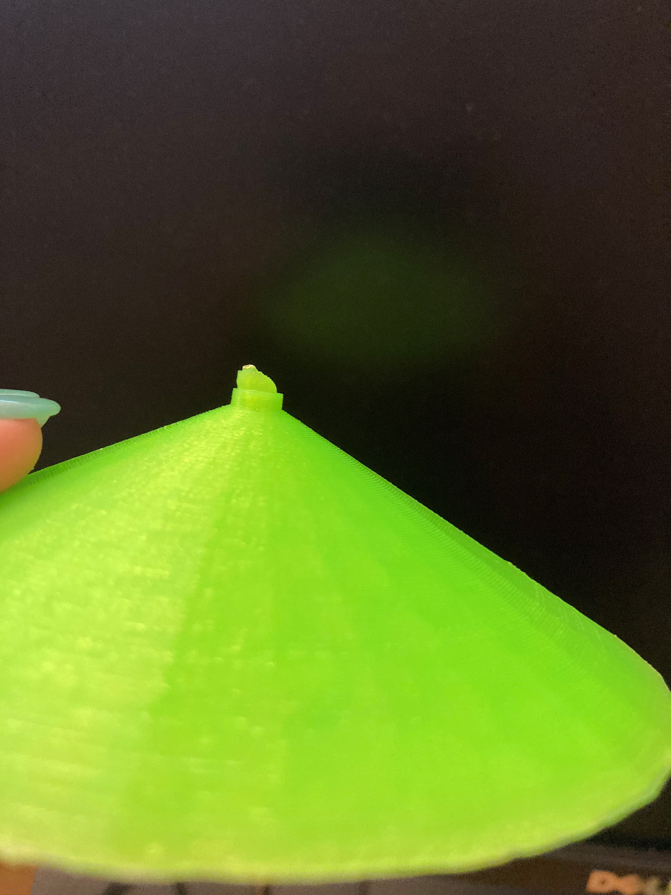
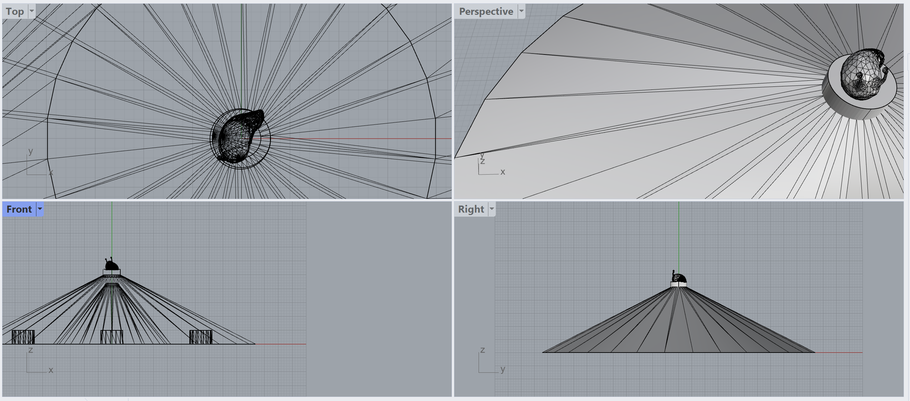

Lamps and Brain Hurts
The Lamp
This was a fantastic learning project. I really enjoyed getting to use what I had learned to design the various components and that I could pull in some laser cutter work. I started this project first using the grasshopper script that we did in class, but I found it was not quite doing what I wanted yet. I watched the video that is posted in my previous page. I had to do a lot of adjusting on this one because the prongs going up would shake too much and get brittle and ugly. I did a couple of rounds of that, but ultimaltly needed to make them wider. I could have added another support loops, but I did not like the look. Measuring the for the top loop to rest correctly went pretty well and I was able to accutatly measure for the rest of the loops on the thrid go. I did make one, that was way to big for my printer, so adjusted down from than.
I started sketching some ideas to make my hanging lamp more of a desk lamp. You can see that sketch interaction in the video. Ultimatly I decided to make a gear lamp to go on my work desk since I am the the tech teacher. I used a lamp image to create an SVG file for the laser printer. It took about three prints to get the gears looking correct and you can see the final in the video.
Next
slug stl!
 
Lamp Design
To begin the lamp process I started out just experimenting in Grasshopper. I first used the method we used in class, and found that I was not quite making the interconnected components I was looking for. I decided to seek out some youtube videos to help me learn some other grasshopper methods. This is the video I used. https://www.youtube.com/watch?v=qLYS16-97M0. Thank to Junchau I was able to figure out one of the pieces I needed that the youtuber forgot to say outloud. This one produces a striped shade, but I would love to figure out how to use similar code methods to create the shape, but to add some circles. I will experiment next week with emmbedding some of what we did in class with what I learned in the video.
My next step was to print my model to see if this was a realistic shape and to calibrate for measuring and creating the lamp component. But then calamity stroke. The IT intern clogged the printer and didnt get a chance to fix it. I looked at it before work but did not find a solution in time before work started. I did some more research, but was not on campus Tuesday to try my list of potential solutions. But thankfully, the intern who knew what he ahd been printing figured it out. Here is his description. " The clogs started when I began using a second embedded magnet as a spacer to eliminate the need for some supports in the print. However, it seems like the double magnet is actually strong enough to interfere with the tachometer of the hotend cooling fan. When the printer prints above both magnets, this fan stops working. When I stop the print (and therefore the movement of the fan through the magnetic field), the fan starts working again. When the fan is stopped, the heatsink on the heatbrake stops cooling, which causes the filament to melt up into the heatbrake, pile up, and clog. " It would have taken me along time to figure that one out on my own, not knowing he was using two magnets. This put the project a bit behind, but my next steps are to experiemnt with adding circles to the design, I may or may not keep them. THen, I need to apply my measurments for my hanging component that will utlize a split and prongs to allow the cord to piece two, which will attach into the main lamp component. I also realized measuring a lightbulb would be important.Below are some sketches and the first model print to get a feel for shape